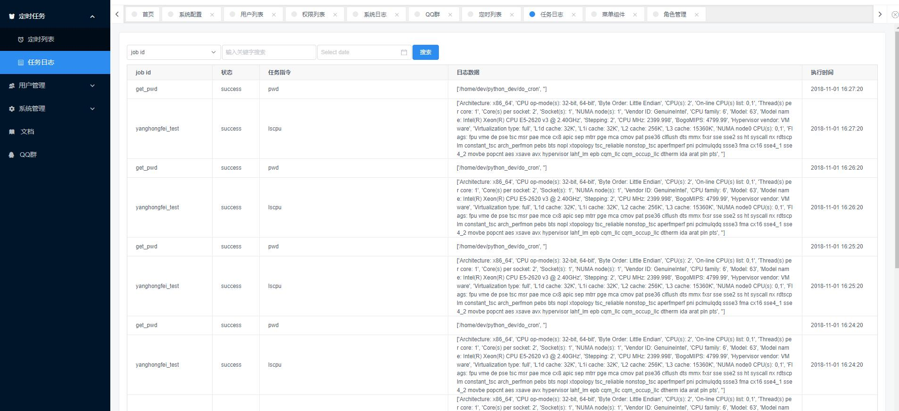

docs
目录:
使用文档
定时任务
1.1 定时任务特点
1.2 用户使用说明
docs
Docs
»
使用文档
»
定时任务
View page source
定时任务
¶
通过定时任务可以进行添加你的定时任务
1.1 定时任务特点
¶
可视化界面操作
定时任务统一管理
完全兼容Crontab
支持秒级定时任务
任务可搜索、暂停、编辑、删除
1.2 用户使用说明
¶
新增任务
Job_id： 任务名称，建议为有意义的英文名称
可执行命令：
Linux
Bash
命令
任务定时器： （秒、分、时、日、月、周）
示例：每分钟的第20秒开始执行
pwd
命令
编辑任务
暂停恢复
状态栏可以将任务暂停/恢复
任务日志
每条任务执行都会记录日志
日志可根据Job_id、状态、关键字、时间范围等搜索
